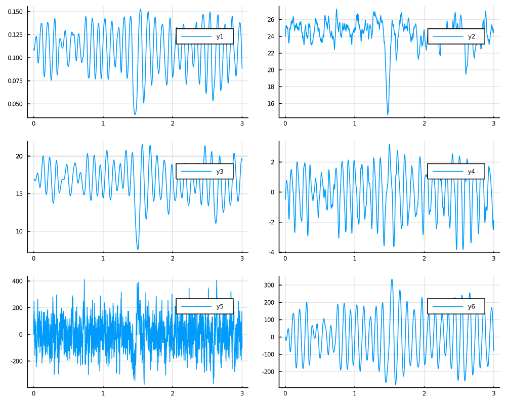

Jansen-Rit model
Neural Mass Model used to describe the EEG data. It is a six-dimensional diffusion process driven by a three-dimensional Wiener process that is a solution to the following stochastic differential equation
\[\begin{equation*}
\begin{aligned}
\dd X_t &= \dot X_t \dd t \\
\dd Y_t &= \dot Y_t \dd t \\
\dd Z_t &= \dot Z_t \dd t \\
\dd \dot X_t &= \left[A a \left(\mu_x(t) + \mbox{Sigm}(Y_t - Z_t)\right) - 2a \dot X_t - a^2 X_t\right] d t + \sigma_x \dd W^{(1)}_t\\
\dd \dot Y_t &= \left[A a \left(\mu_y(t) + C_2\mbox{Sigm}(C_1 X_t)\right) - 2a \dot Y_t - a^2 Y_t\right] d t + \sigma_y \dd W^{(2)}_t\\
\dd \dot Z_t &= \left[B b \left(\mu_z(t) + C_4\mbox{Sigm}(C_3 X_t)\right) - 2b \dot Z_t - b^2 Z_t\right] \dd t + \sigma_z \dd W^{(3)}_t,
\end{aligned}
\end{equation*}\]
with initial condition
\[(X_0,Y_0,Z_0, \dot X_0, \dot Y_0, \dot Z_0)=(x_0,y_0,z_0, \dot x_0, \dot y_0, \dot z_0) \in \RR^6\]
where
\[\mbox{Sigm}(x) := \frac{\nu_{max}}{1 + e^{r(v_0 - x)}},\]
and
\[\mu_x(t) :=\mu_x,\qquad \mu_y(t) :=\mu_y, \mu_z(t) :=\mu_z\]
and
\[C_1 = C, \quad C_2 = 0.8C, \quad C_4 = C_3 = 0.25C.\]
Can be imported with
@load_diffusion JansenRitExample
using DiffusionDefinition
using StaticArrays, Plots
@load_diffusion JansenRit
θ = [3.25, 100.0, 22.0, 50.0 , 135.0, 5.0, 6.0, 0.56, 0.0, 220.0, 0.0, 0.01, 2000.0, 1.0]
P = JansenRit(θ...)
tt, y1 = 0.0:0.0001:3.0, @SVector [0.11, 24, 17, -0.5, 0.0, 0.0]
X = rand(P, tt, y1)
plot(X, Val(:vs_time), layout=(3,2), size=(1000,800))